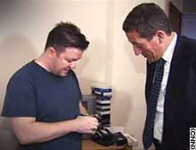
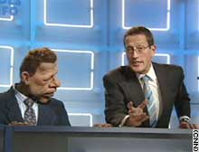

Watch Movie: They were given as advice to CNN International Anchor Richard Quest just four days before his next public appearance -- as a stand-up comedian at one of Broadway's top comedy clubs, Carolines. Club owner Caroline Hirsch isn't making Richard feel any better when he admits to being nervous at the thought of performing on a stage which has launched the careers of Jerry Seinfeld, Chris Rock and Jay Leno. "You have to go on that stage and you have to be able to control the people in the audience and that's a very, very difficult thing to do. Control them by being funny. Controlling them by having them wait for your next word and controlling them by making them laugh with you." Quest: "The danger, of course, is they laugh at me." Hirsch: "Yeah that could happen." It is the culmination of an international Quest for comedy. Richard has travelled to New York, Paris and London, talking with comedians, writers and comedy fans, getting inside their heads and seeking an answer to the question: "What is funny?" On the road he has rubbed funnybones with some of the brightest sparks in the comic world. Ricky Gervais burst onto the scene with the hilarious British spoof documentary "The Office", which has now been reworked for U.S. audiences. He is currently working on a follow-up about actors, entitled "Extras." Gervais confessed to Richard he felt guilty that success had come without years of hard work on the comedy circuit performing stand-up in smoky bar rooms for a fistful of dollars. Coming from a legendary funnyman such as Billy Connolly, these words need to be taken seriously. They were given as advice to CNN International Anchor Richard Quest just four days before his next public appearance -- as a stand-up comedian at one of Broadway's top comedy clubs, Carolines. Club owner Caroline Hirsch isn't making Richard feel any better when he admits to being nervous at the thought of performing on a stage which has launched the careers of Jerry Seinfeld, Chris Rock and Jay Leno. "You have to go on that stage and you have to be able to control the people in the audience and that's a very, very difficult thing to do. Control them by being funny. Controlling them by having them wait for your next word and controlling them by making them laugh with you." Quest: "The danger, of course, is they laugh at me." Hirsch: "Yeah that could happen." It is the culmination of an international Quest for comedy. Richard has travelled to New York, Paris and London, talking with comedians, writers and comedy fans, getting inside their heads and seeking an answer to the question: "What is funny?" On the road he has rubbed funnybones with some of the brightest sparks in the comic world. Ricky Gervais burst onto the scene with the hilarious British spoof documentary "The Office", which has now been reworked for U.S. audiences. He is currently working on a follow-up about actors, entitled "Extras." Gervais confessed to Richard he felt guilty that success had come without years of hard work on the comedy circuit performing stand-up in smoky bar rooms for a fistful of dollars. Richard meets the team behind the irreverent puppets to discover what can be learned from a French comic institution. In contrast to the script-writers, the producers and the expensive sets of TV shows like "Les Guignols," the stand-up comedian cuts a lonely figure, battling audiences alone -- as Richard is about to find out. Help comes in the form of Linda Smith, an Emmy-winning comic who imparts her experience to students who have signed up for a six-week course at the Manhattan Comedy School. But with four days to go before his own performance, Richard is finding it increasingly hard to laugh. You can follow Richard's comedy quest from classroom to comedy club as he battles to overcome fear of failure and comes face to face with a live audience -- instead of an autocue. |